Gallery of Classic and AMRClaw applications¶
See also the Gallery of Jupyter notebooks.
Contents
1-dimensional Advection¶
Directory: `$CLAW/classic/examples/advection_1d_example1`
Advecting square wave and Gaussian with periodic BCs.


Directory: `$CLAW/amrclaw/examples/advection_1d_example1`
AMR applied to Advecting square wave and Gaussian with periodic BCs.

 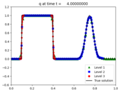
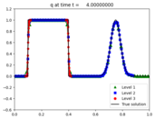
1-dimensional acoustics¶
Directory: `$CLAW/classic/examples/acoustics_1d_example1`
Acoustics equations with Gaussian initial data.
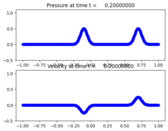Directory: `$CLAW/amrclaw/examples/acoustics_1d_homogeneous`
AMR on acoustics equations with Gaussian initial data.


Directory: `$CLAW/classic/examples/acoustics_1d_heterogeneous`
Acoustics equations with interface showing reflection and transmission.


Directory: `$CLAW/amrclaw/examples/acoustics_1d_heterogeneous`
Acoustics equations with interface showing reflection and transmission.
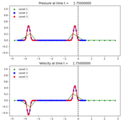 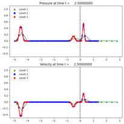1-dimensional Euler¶
Directory: `$CLAW/classic/examples/euler_1d_wcblast`
Woodward-Colella blast wave problem for Euler equations of gas dynamics.


Directory: `$CLAW/amrclaw/examples/euler_1d_wcblast`
AMR on Woodward-Colella blast wave problem for Euler equations of gas dynamics.
 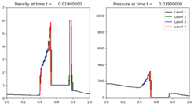
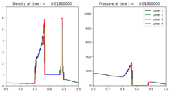

2-dimensional advection¶
Directory: `$CLAW/amrclaw/examples/advection_2d_square`
Advecting square with periodic boundary conditions.
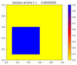 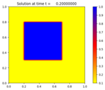2-dimensional variable-coefficient advection¶
Directory: `$CLAW/amrclaw/examples/advection_2d_swirl`
Advection with a swirling flow field with AMR.
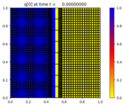 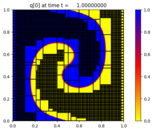 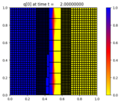Directory: `$CLAW/classic/examples/advection_2d_annulus`
Advection in an annular region.
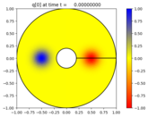 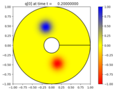Directory: `$CLAW/amrclaw/examples/advection_2d_annulus`
Advection in an annular region with AMR.
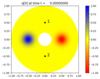 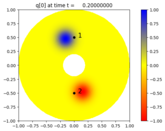Directory: `$CLAW/amrclaw/examples/advection_2d_inflow`
Advection with inflow boundary conditions.
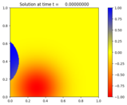 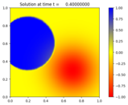2-dimensional acoustics¶
Directory: `$CLAW/classic/examples/acoustics_2d_radial`
Expanding radial acoustic wave in a homogeneous medium.
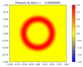 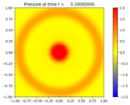Directory: `$CLAW/amrclaw/examples/acoustics_2d_radial`
Expanding radial acoustic wave in a homogeneous medium with AMR.
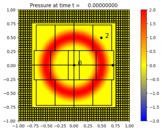 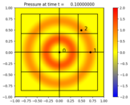 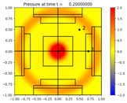2-dimensional Burgers’ equation¶
Directory: `$CLAW/amrclaw/examples/burgers_2d_square`
Burgers’ equation \(q_t + 0.5(q^2)_x + 0.5(q^2)_y = 0\) with square initial pulse and periodic boundary conditions.
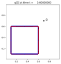 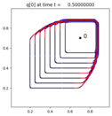 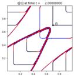